POSTUPAK · DODATNE VJEŽBE (HIDRAULIKA) · FLUIDSIM
Postupak · vježbe V34, V35, V36 i V37 · FluidSIM-H
Postupak — dodatne vježbe iz hidraulike u FluidSIM-H
Četiri hidrauličke vježbe koje nisu na radnim listovima, korak po korak u FluidSIM-H: diferencijalni spoj, sinkronizacija dvaju cilindara djeliteljem protoka, uklješten klip s deblokirajućim ventilima i redoslijedno upravljanje dvama cilindrima tlakom. Uz svaki korak su snimke zaslona, simulirane vrijednosti i potpuna rješenja.
- nacrtati diferencijalni spoj s preklopnikom i usporediti brzine i tlakove
- pokazati redoslijed gibanja paralelnih cilindara s različitim teretima i sinkronizaciju djeliteljem
- uklještiti klip deblokirajućim ventilima i prigušenjem izlaznog toka
- postaviti redoslijedne ventile za slijed 1A+ 2A+ 2A− 1A−
- prepoznati što model u FluidSIM-H ne pokazuje i to provjeriti na stolu
O postupku
Ova stranica je postupak za hidrauličke vježbe koje nisu dio radnih listova: sve što se radi na računalu, od nove sheme do provjere u simulaciji. Tekst zadatka, sheme, pitanja i rješenja isti su kao na stranicama vježbi V34 Diferencijalno upravljanje i V35 Hidraulička sinkronizacija i V36 Uklješten klip i V37 Proslijedno tlačno upravljanje dvama cilindrima; ovdje su dopunjeni koracima u FluidSIM-u i rezultatima simulacije.
Rješenja su skrivena ispod svakog pitanja. Najprije riješite sami, a onda otvorite Prikaži rješenje i usporedite.
Gotove sheme (rješenja) za FluidSIM
- PIH_V34_rjesenje_v01.ct — V34: 4/3 P→T, preklopnik 1V2 (3/2) i nepovratni ventil 1V3 za diferencijalni spoj, cilindar Ø25/16
- PIH_V35_paralelno_v01.ct — V35: paralelni spoj bez djelitelja, tereti 1500 N i 500 N
- PIH_V35_rjesenje_v01.ct — V35: djelitelj protoka s nepovratnim ventilima za povrat
- PIH_V36_rjesenje_v01.ct — V36: 4/3 s A i B na T, dva deblokirajuća ventila, prigušivanje izlaznog toka 1V3 i 1V4, sigurnosni ventil 4 MPa
- PIH_V37_rjesenje_v01.ct — V37: redoslijedni ventili 1V2 3 MPa i 1V3 2,5 MPa s nepovratnim ventilima
- PIH_V37_zapreka_v01.ct — V37: pokus sa zaprekom na 100 mm (promjenjiva sila na 1A)
Datoteke se otvaraju u FluidSIM-H 4 (File → Open). Snimke zaslona napravljene su u FluidSIM-H 4.2 s engleskim sučeljem. Osnove rada u FluidSIM-u (nova shema, knjižnica, crtanje vodova, provjera, simulacija, dijagram put–korak) opisane su u Postupku V01, odjeljak 0.
0 · Prije početka
- File → New (Ctrl + N) otvara novu shemu; Window → Tile Vertically (Shift + F4) postavlja shemu i knjižnicu jednu uz drugu.
- Elemente povucite iz knjižnice na shemu i dvoklikom otvorite njihove dijaloge. Vod crtajte povlačenjem od priključka do priključka; povlačenjem na postojeći vod nastaje račvanje.
- Oznake (1A1, 1V1, 1S1, 0Z1 …) upisuju se elementom Text iz skupine Miscellaneous (uključite Frame Text).
- Execute → Check Superficially (F6) provjerava crtež; Start (F9), Pause (F8), Stop (F5).
- Ručno tipkalo aktivirate klikom mišem (dok držite tipku miša); Shift + klik zadrži ga pritisnutim. Ručica sa zasunom prebacuje se jednim klikom i ostaje u položaju.
- Granični ventil veže se uz cilindar oznakom: dvoklik na cilindar → kartica Actuating Labels → oznaka (npr. 1S2) i položaj na hodu (od–do u mm); ista oznaka upiše se dvoklikom na valjak graničnog ventila (Mechanical connection → Label).
- Dijagram put–korak: iz Miscellaneous povucite State Diagram i na njega povucite cilindre i ventile čije stanje želite pratiti.
FluidSIM-H
Sve vježbe rade se u hidrauličkoj inačici programa; tlak se prikazuje u MPa (1 MPa = 10 bar). Ručni razvodnik u simulaciji: Shift + klik na polje ga zadrži, klik na isto polje ga otpusti. Zadani otpor razvodnika (0,01 MPa/(l/min)²) smanjite na 0,0002, inače već pri 2 l/min nastaje nerealno velik pad tlaka.
Dio A · V34 Diferencijalno upravljanje
Zadatak
Preša za utiskivanje čahura u kućišta pumpi ima hod alata 200 mm. Prvih 150 mm alat se samo primiče obratku i za to je dovoljna mala sila (svladava se trenje vodilica i težina alata). Tek zadnjih 50 mm alat utiskuje čahuru i tada treba puna sila cilindra. Kad bi cijeli hod išao brzinom utiskivanja, takt bi bio nepotrebno dug. Diferencijalni spoj omogućuje brzo primicanje s istom crpkom, bez akumulatora ili dodatne crpke.
Na didaktičkom stolu prešu predstavlja vodoravni cilindar Ø25/16 mm s hodom 200 mm. Agregat daje oko 2,0 l/min, sigurnosni ventil namješten je na 50 bar. Smjer gibanja određuje ručni razvodnik 4/3 (1V1) centriran oprugama, sa srednjim položajem koji spaja P s T i zatvara A i B. U vodu B nalazi se preklopni ručni razvodnik 3/2 (1V2): u mirnom položaju vod B cilindra ide na glavni razvodnik (normalni spoj), a kad se pritisne, vod B cilindra spaja se preko nepovratnog ventila 1V3 s vodom A (diferencijalni spoj).
Zadatak: izmjerite vrijeme i tlak izvlačenja u normalnom i diferencijalnom spoju, izmjerite vrijeme uvlačenja i odredite koliko se skraćuje ciklus ako se 150 mm prijeđe diferencijalno, a 50 mm normalno.
Sigurnost pri radu
Pažnja
U diferencijalnom spoju klipnjača se giba oko 2,4 puta brže nego u normalnom — na didaktičkom stolu oko 17 cm/s. Ne stavljajte ruke u područje hoda i ne pokušavajte zaustaviti klipnjaču rukom. U diferencijalnom spoju obje strane klipa su pod istim tlakom, pa oba manometra na cilindru pokazuju tlak i kad se klipnjača ne giba. Prije odspajanja isključite agregat, pomaknite 1V1 i 1V2 u sve položaje i provjerite da 0Z1, 1Z1 i 1Z2 pokazuju 0 bar.
Crijeva spajajte samo bez tlaka i provjerite spojke povlačenjem. Crijevo između 1V2 i voda A u diferencijalnom spoju vodi zbroj protoka crpke i protoka iz prstenaste strane (oko 4,9 l/min) — mora biti istog presjeka kao vod A. Propuštanje tražite kartonom, ulje obrišite odmah, a ozljeda uljem pod tlakom traži hitnu liječničku pomoć. Zaštitne naočale cijelo vrijeme.
Shema
U diferencijalnom spoju tlak je jednak s obje strane klipa. Sila je razlika sila na dvije površine: F = p · A1 − p · A2 = p · A3, gdje je A3 površina presjeka klipnjače. Brzina je određena istom površinom: crpka mora napuniti samo volumen koji zauzima klipnjača, v = Q / A3. Veća brzina plaća se manjom silom — snaga p · Q ostaje ista.
Uvlačenje se radi uvijek u normalnom spoju: 1V2 u mirnom položaju, 1V1 u desnom položaju (P→B, A→T). Nepovratni ventil 1V3 sprječava da ulje iz voda A pri uvlačenju ode kroz 1V2 na krivu stranu ako je preklopnik greškom ostao pritisnut.
Vježba se radi u FluidSIM-u
Koraci postupka vježbe koji se odnose na spajanje na didaktičkoj ploči i mjerenje štopericom ili manometrom izvode se u simulaciji. Gdje simulacija ne može pokazati pojavu iz pokusa, to je napisano uz korak.
A1 · Krug s preklopnikom 1V2 i nepovratnim ventilom 1V3
- Nova shema u FluidSIM-H. Agregat: Pump unit (simplified representation), Operating Pressure 5 MPa (50 bar), Flow 2 l/min.
- 1V1: 4/3-way hand-lever valve with bypass position (srednji položaj P→T, A i B zatvoreni); u Configure Way Valve uključite Spring-returned lijevo i desno, a Hydraulic resistance smanjite na 0.0002 — zadana vrijednost 0,01 daje prevelik pad tlaka već pri 2 l/min.
- 1V2: 3/2-way hand-lever valve s oprugom, otpor isto 0.0002: u mirnom položaju A–T (vod B cilindra ide na 1V1), pritisnut A–P (vod B cilindra ide prema 1V3). 1V3: Check valve; u FluidSIM-H propušta od priključka A prema B, pa A spojite na 1V2, a B na vod A cilindra.
- Cilindar 1A Ø25/16 mm, hod 200 mm. Manometri 0Z1 (P), 1Z1 (vod A), 1Z2 (vod B cilindra). Oznake upišite elementom Text lijevo od elementa — FluidSIM ih tada sam upiše i u stupac Designation dijagrama. State Diagram: cilindar (položaj, brzina), 1Z1, 1Z2.
A2 · Normalni, diferencijalni i kombinirani hod
- Normalni spoj: Start, Shift + klik na lijevo polje 1V1 (zasun). Klipnjača se izvlači 0,068 m/s, 1Z1 pokazuje samo 0,01 MPa (Slika F2.1); cijeli hod traje oko 2,9 s, na kraju 1Z1 = 5,00 MPa (Slika F2.2).
- Klik na isto polje otpušta ručicu; Shift + klik na desno polje: uvlačenje oko 1,7 s, 0,115 m/s (Slika F2.3). Dijagram normalnog ciklusa: Slika F2.4.
- Diferencijalni spoj: Shift + klik na 1V2, zatim na lijevo polje 1V1. Ulje s prstenaste strane ide kroz 1V2 i 1V3 u vod A: brzina 0,16 m/s, hod oko 1,25 s; za vrijeme gibanja 1Z1 = 0,17 i 1Z2 = 0,26 MPa (Slika F2.5).
- Na kraju diferencijalnog hoda 1Z1 = 5,00 MPa, a 1Z2 ostaje oko 0,2 MPa jer 1V3 ne propušta ulje natrag (Slika F2.6).
- Kombinirani hod: pustite 1V2 za vrijeme izvlačenja — brzina padne na normalnu (Slika F2.7). Ručnim prebacivanjem na oko 120 mm hod je trajao oko 1,9 s (Slika F2.8); prebacivanjem točno na 150 mm dobije se vrijeme iz pitanja 5.
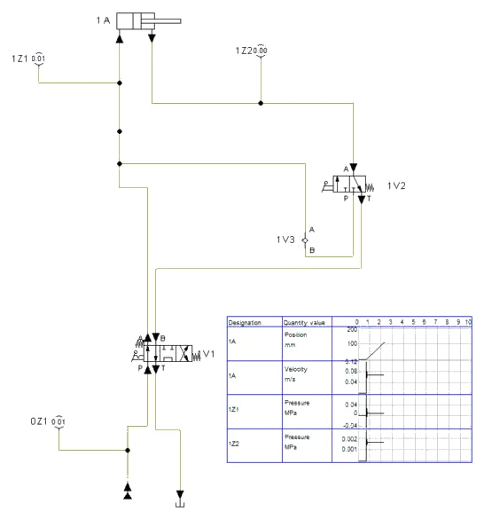
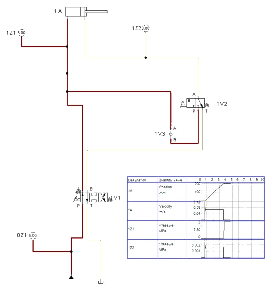
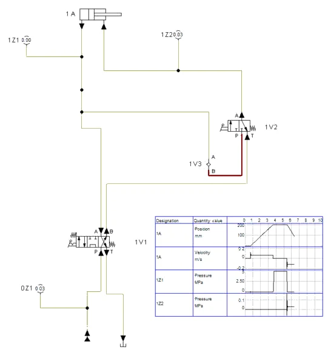
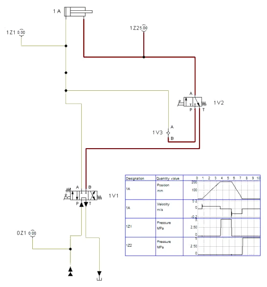
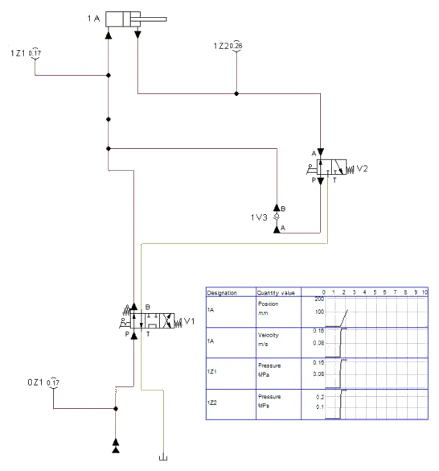
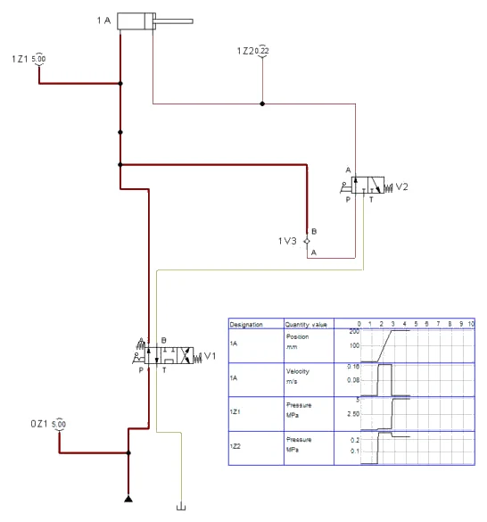
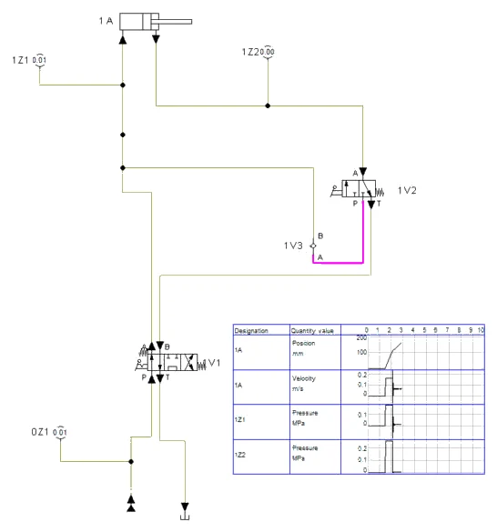
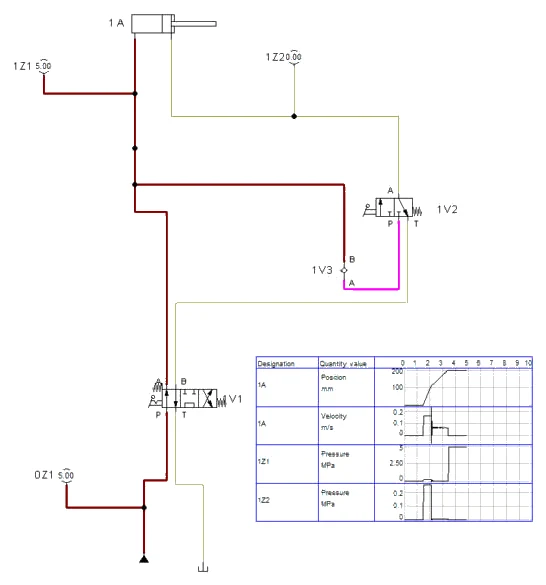
A3 · Pitanja i zadaci
1. Opišite tok ulja kroz krug u diferencijalnom izvlačenju. Zašto se klipnjača giba iako su obje strane klipa pod istim tlakom?
Prikaži rješenje
Crpka tlači ulje kroz 1V1 (P→A) na klipnu stranu. Ulje iz prstenaste strane izlazi kroz B cilindra, 1V2 i 1V3 u vod A i pridružuje se protoku crpke. Tlak je isti s obje strane, ali površine nisu: s klipne strane djeluje A1, s prstenaste A2 = A1 − A3. Razlika sila p · A3 gura klip prema van.
U FluidSIM-u
U simulaciji (Slika F2.5) obje strane klipa su pod gotovo istim tlakom (0,17 i 0,26 MPa; razlika je pad tlaka u vodovima).
2. Izračunajte brzinu izvlačenja u normalnom i diferencijalnom spoju te brzinu uvlačenja za cilindar Ø25/16 mm uz 2,0 l/min.
Prikaži rješenje
A1 = 490,9 mm², A3 = π · 16² / 4 = 201,1 mm², A2 = 289,8 mm². Q = 33 333 mm³/s. Normalno: v = 33 333 / 490,9 = 67,9 mm/s. Diferencijalno: v = 33 333 / 201,1 = 165,8 mm/s. Uvlačenje: v = 33 333 / 289,8 = 115,0 mm/s. Diferencijalno izvlačenje je 2,44 puta brže od normalnog.
U FluidSIM-u
Simulacija: normalno 0,068 m/s, diferencijalno 0,16 m/s, uvlačenje 0,115 m/s (Slike F2.1, F2.5, F2.3).
3. Kolike su najveće sile izvlačenja pri 50 bar u oba spoja? Može li se diferencijalnim spojem primicati alat ako otpor primicanja iznosi 1,1 kN?
Prikaži rješenje
Normalno: F = 5 N/mm² · 490,9 mm² = 2454 N. Diferencijalno: F = 5 · 201,1 = 1005 N. Za otpor od 1,1 kN u diferencijalnom spoju trebao bi tlak p = 1100 / 201,1 = 5,47 N/mm² = 54,7 bar, više od 50 bar sigurnosnog ventila — klipnjača bi stala. Diferencijalni spoj prikladan je samo za gibanja s malim otporom, a radna sila ostvaruje se u normalnom spoju.
4. Koliki protok ulazi na klipnu stranu u diferencijalnom spoju i koliko od toga dolazi iz prstenaste strane? Što iz toga slijedi za crijevo između 1V2 i voda A?
Prikaži rješenje
Na klipnu stranu ulazi Q1 = v · A1 = 165,8 mm/s · 490,9 mm² = 81 400 mm³/s ≈ 4,88 l/min. Iz prstenaste strane dolazi Q2 = v · A2 = 165,8 · 289,8 = 48 050 mm³/s ≈ 2,88 l/min; ostatak od 2,0 l/min daje crpka. Vod A od spoja do cilindra, 1V2 i 1V3 moraju propustiti gotovo 2,5 puta veći protok od protoka crpke bez velikog pada tlaka.
5. Koliko traje izvlačenje ako se 150 mm prijeđe diferencijalno, a 50 mm normalno? Koliki je postotak uštede prema izvlačenju cijelog hoda u normalnom spoju?
Prikaži rješenje
t1 = 150 / 165,8 = 0,90 s, t2 = 50 / 67,9 = 0,74 s, ukupno 1,64 s. Cijeli hod normalno: 200 / 67,9 = 2,95 s. Ušteda: 1 − 1,64 / 2,95 = 0,44, dakle 44 % vremena izvlačenja. S uvlačenjem od 1,74 s ciklus pada s 4,69 s na 3,38 s.
U FluidSIM-u
Simulacija: cijeli hod normalno oko 2,9 s, diferencijalno oko 1,25 s; kombinirano s prebacivanjem na oko 120 mm oko 1,9 s (Slika F2.8).
6. Koliki bi trebao biti promjer klipnjače da brzina diferencijalnog izvlačenja bude jednaka brzini uvlačenja? Provjerite za zadani cilindar.
Prikaži rješenje
Brzine su jednake kad je A3 = A2, odnosno A1 = 2 · A3: d = D / √2 = 25 / 1,414 = 17,7 mm. Zadani cilindar ima klipnjaču od 16 mm, pa je diferencijalno izvlačenje (165,8 mm/s) nešto brže od uvlačenja (115,0 mm/s). Cilindri s omjerom površina 2 : 1 izrađuju se upravo za takve krugove.
7. Dopunite shemu: preklapanje iz diferencijalnog u normalni spoj mora se obaviti samo od sebe kad alat nalegne na čahuru. Koji element zamjenjuje ručni preklopnik 1V2?
Prikaži rješenje
Kad alat nalegne na obradak, tlak u vodu A naraste. Preklopnik 1V2 zamjenjuje se razvodnikom 3/2 s tlačnim upravljanjem iz voda A (ili redoslijednim ventilom koji pri npr. 35 bar prebacuje vod B cilindra na spremnik). Drugo rješenje je granični ventil s valjčićem na položaju 150 mm, ili u elektrohidraulici granična sklopka i elektromagnetski razvodnik (vidi V39). U shemu se crta razvodnik s iscrtkanim upravljačkim vodom iz voda A i podesivom oprugom.
8. Preša HP-1 ima cilindar Ø80/50 mm i protok 22,0 l/min. Kolike bi bile brzina i najveća sila diferencijalnog izvlačenja pri 160 bar?
Prikaži rješenje
A3 = π · 50² / 4 = 1963 mm². Q = 22,0 l/min = 366 667 mm³/s. v = 366 667 / 1963 = 187 mm/s (normalno 73 mm/s). F = 16 N/mm² · 1963 mm² = 31 400 N = 31,4 kN (normalno 80,4 kN). I ovdje se primicanje radi diferencijalno, a prešanje u normalnom spoju.
Dio B · V35 Hidraulička sinkronizacija
Zadatak
Vrata sušionice za lakirane dijelove teška su i široka, pa ih dižu dva uspravna cilindra, po jedan na svakom kraju. Na vratima je s jedne strane ugrađen pogon ventilatora, pa je jedan cilindar opterećen triput više od drugoga. Pri prvom puštanju u pogon vrata su se nakosila i zaglavila u vodilicama: lakše opterećeni cilindar izvukao se gotovo do kraja prije nego što je teži uopće krenuo. Treba ostvariti gibanje u kojem se oba cilindra izvlače istom brzinom bez obzira na raspodjelu tereta.
Na didaktičkom stolu rabe se dva jednaka uspravna cilindra Ø25/16 mm s hodom 200 mm, bez krute veze među klipnjačama, tako da se razlika položaja može izmjeriti ravnalom. Cilindar 1A1 opterećen je silom 1,5 kN, a 1A2 silom 0,5 kN. Smjer određuje ručni razvodnik 4/3 centriran oprugama, sa srednjim položajem P→T i zatvorenim A i B. Agregat daje oko 2,0 l/min, sigurnosni ventil je namješten na 50 bar. Za sinkronizaciju se koristi zupčasti djelitelj protoka s dva jednaka odsječka (1V2).
Zadatak: izmjerite gibanje u paralelnom spoju bez djelitelja, zatim s djeliteljem; izmjerite tlakove u obje grane i razliku položaja na kraju izvlačenja; izračunajte što bi dao serijski spoj.
Sigurnost pri radu
Pažnja
Djelitelj protoka može povisiti tlak u jednoj grani iznad tlaka na svom ulazu: odsječak s manjim teretom radi kao motor i pogoni odsječak s većim teretom kao crpku. Ne mijenjajte terete dok agregat radi i ne zatvarajte izlaz jedne grane dok je druga pod tlakom. Oba tereta moraju biti osigurana od pada. Prije odspajanja spustite oba cilindra do kraja, isključite agregat, pomaknite ručicu u oba smjera i provjerite da 0Z1, 1Z1 i 1Z2 pokazuju 0 bar.
Crijeva spajajte samo bez tlaka i provjerite spojke povlačenjem. Ravnala postavite tako da se očitavaju sa strane, bez posezanja iznad tereta. U paralelnom spoju bez djelitelja lakši cilindar kreće naglo i punom brzinom — područje iznad tereta mora biti prazno. Propuštanje tražite kartonom, ulje obrišite odmah; ozljeda uljem pod tlakom traži hitnu liječničku pomoć. Zaštitne naočale cijelo vrijeme.
Shema
Budući da su odsječci na istom vratilu, svaki okretaj propušta isti volumen u obje grane. Djelitelj ne mjeri položaj cilindara, nego samo dijeli volumen, pa zbog unutarnjeg propuštanja odsječaka ostaje malo odstupanje koje ovisi o razlici tlakova u granama. Pri uvlačenju ulje iz klipnih prostora vraća se kroz isti djelitelj, koji tada radi kao spajač protoka i usklađuje i povratno gibanje.
Vježba se radi u FluidSIM-u
Koraci postupka vježbe koji se odnose na spajanje na didaktičkoj ploči i mjerenje štopericom ili manometrom izvode se u simulaciji. Gdje simulacija ne može pokazati pojavu iz pokusa, to je napisano uz korak.
B1 · Dva cilindra s različitim teretima
- Dva cilindra Ø25/16 mm, hod 200 mm, uspravno: Edit → Rotate → 90°. Teret: kartica Force profile → Constant force 1500 N za 1A1 i 500 N za 1A2 (sila protiv izvlačenja).
- Agregat 5 MPa, 2 l/min; 1V1 kao u V34 (4/3, srednji položaj P→T, opruge, otpor 0.0002). Manometri 1Z1 i 1Z2 na vodove klipnih strana, 0Z1 na P. State Diagram: oba cilindra i oba manometra.
- Paralelni spoj bez djelitelja: vod A razvodnika račva se izravno na klipne strane obaju cilindara, prstenaste strane na vod B.
B2 · Paralelni spoj bez djelitelja
- Start, Shift + klik na lijevo polje 1V1. Prvi krene 1A2 (manji teret) pri 1Z2 = 1,02 MPa, a 1A1 miruje (Slika G2.1). Tek kad 1A2 stigne na kraj (oko 2,9 s), tlak naraste na 3,06 MPa i krene 1A1 (Slika G2.2).
- Ukupno vrijeme izvlačenja oko 5,9 s — svaki cilindar oko 2,95 s punim protokom, jedan za drugim.
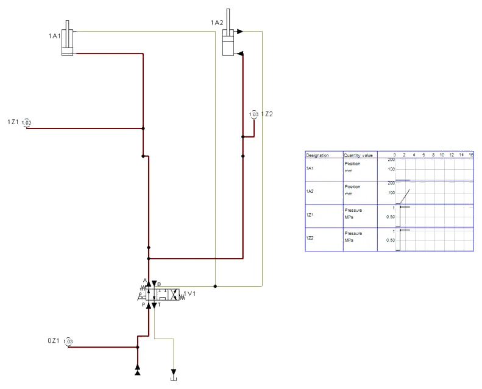
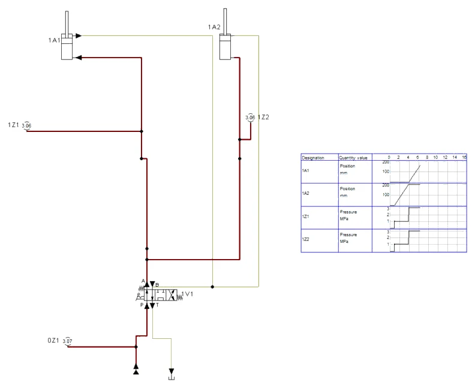
B3 · Spoj s djeliteljem protoka
- Djelitelj 1V2: Flow divider iz skupine Shutoff Valves and Flow Control Valves; ulaz P na vod A razvodnika, izlazi A i B na klipne strane cilindara.
- Djelitelj u FluidSIM-H dijeli samo protok koji ulazi na P. Pri uvlačenju ulje se vraća prema razvodniku, a kad se jedna grana zaustavi, zaustavi se i druga; zato su paralelno s djeliteljem dodani nepovratni ventili 1V3 i 1V4 koji ulje iz klipnih strana puštaju mimo djelitelja.
- Izvlačenje s djeliteljem: oba cilindra idu zajedno, od oko 1,1 do 7,0 s (5,9 s, 34 mm/s), 1Z1 = 3,06 MPa, 1Z2 = 1,02 MPa, 0Z1 = 3,08 MPa (Slike G3.1 i G3.2).
- Uvlačenje: tereti vuku klipnjače prema dolje brže nego što crpka puni prstenaste prostore — vodovi su ljubičasti (podtlak) i cilindri se vraćaju bez sinkronizacije (Slika G3.3). Dijagram cijelog ciklusa: Slika G3.4.
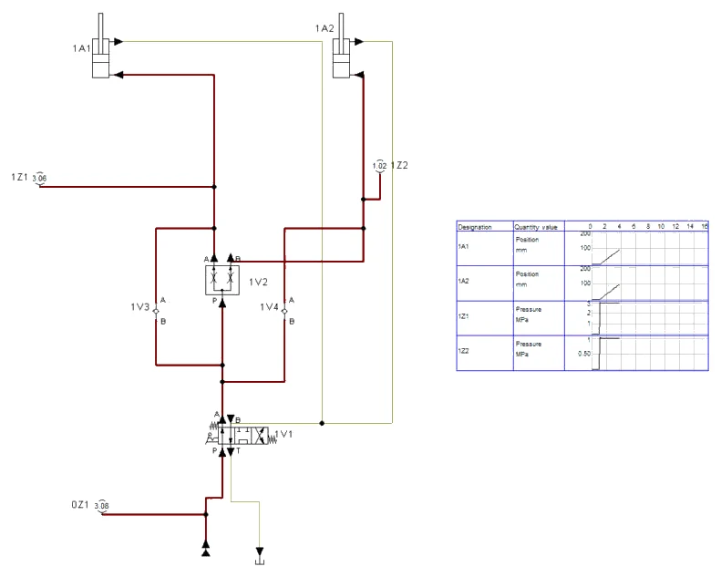
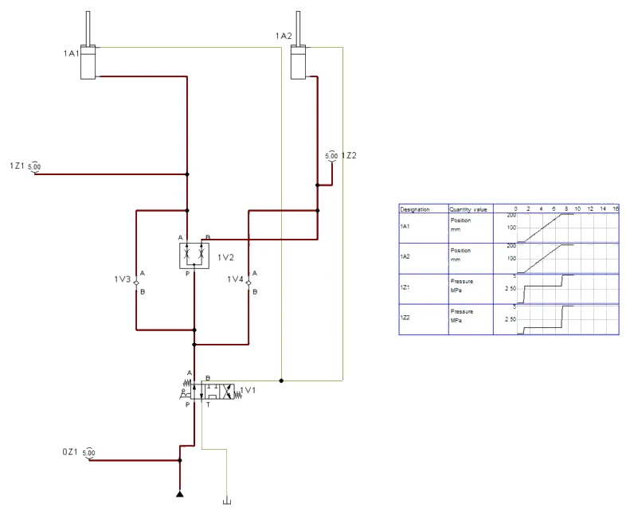
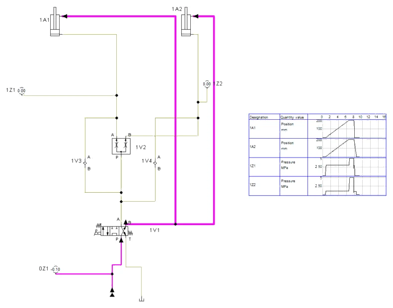
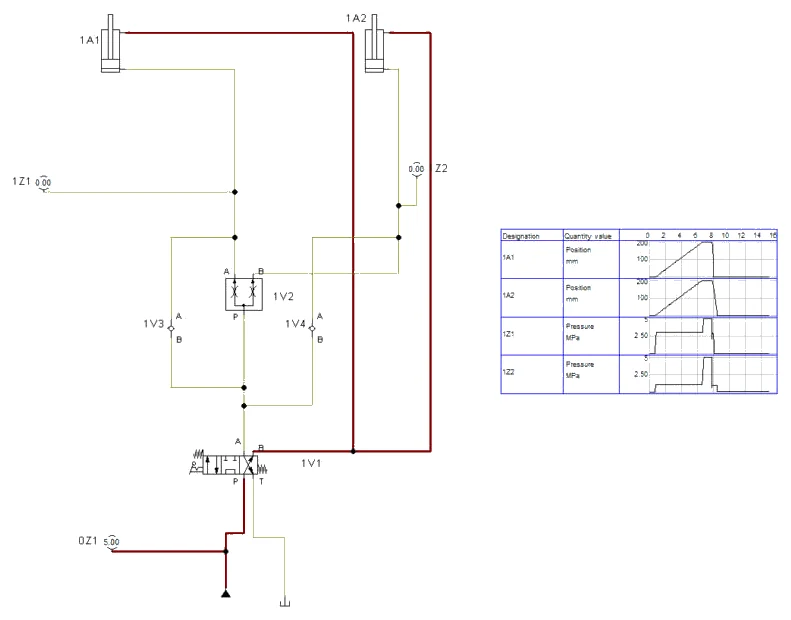
Simulacija i stol
Djelitelj u FluidSIM-H je prigušni (ventilski) model, a ne zupčasti djelitelj s dva odsječka na istom vratilu. Zato ne dijeli protok i pri povratku, a tlak na ulazu jednak je višem tlaku grane (0Z1 = 3,08 MPa), dok bi kod idealnog zupčastog djelitelja bio oko 2,04 MPa (pitanje 3). Model dijeli točno, pa razlika položaja na kraju hoda iznosi 0 mm.
B4 · Pitanja i zadaci
1. Koji se cilindar u paralelnom spoju bez djelitelja pomaknuo prvi i zašto? Što bi se dogodilo s vratima sušionice?
Prikaži rješenje
Prvi se izvukao 1A2 s manjim teretom. Tlak u zajedničkom vodu raste samo dok ne svlada najmanji otpor; kad dosegne 10,2 bar, 1A2 krene i sav protok ide u njega, a 1A1 miruje jer za njega treba 30,6 bar. Tek kad 1A2 stigne do kraja, tlak raste dalje i kreće 1A1. Vrata bi se nakosila, zaglavila u vodilicama, a vodilice i klipnjače bile bi opterećene bočnom silom.
U FluidSIM-u
Simulacija (Slike G2.1 i G2.2): prvi 1A2 pri 1,02 MPa, zatim 1A1 pri 3,06 MPa.
2. Izračunajte tlakove potrebne za terete od 1,5 kN i 0,5 kN na cilindrima Ø25 mm i ukupno vrijeme izvlačenja obaju cilindara u paralelnom spoju bez djelitelja.
Prikaži rješenje
A1 = 490,9 mm². p1 = 1500 / 490,9 = 3,06 N/mm² = 30,6 bar; p2 = 500 / 490,9 = 1,02 N/mm² = 10,2 bar. Cilindri se gibaju jedan za drugim, svaki punim protokom: V = 490,9 mm² · 200 mm = 98,2 cm³, t = 98,2 / 33,3 = 2,95 s po cilindru, ukupno oko 5,9 s.
U FluidSIM-u
Simulirani tlakovi 1,02 i 3,06 MPa i ukupno vrijeme oko 5,9 s odgovaraju proračunu.
3. Koliko traje izvlačenje s djeliteljem i kolika je brzina svakog cilindra? Koliki tlak očekujete na ulazu u djelitelj (0Z1, bez gubitaka)?
Prikaži rješenje
Svaka grana dobiva 1,0 l/min = 16 667 mm³/s. v = 16 667 / 490,9 = 34,0 mm/s, t = 200 / 34,0 = 5,9 s — isto ukupno vrijeme kao bez djelitelja, ali cilindri idu zajedno. Iz ravnoteže snaga idealnog djelitelja s jednakim odsječcima: pul · Q = p1 · Q/2 + p2 · Q/2, dakle pul = (30,6 + 10,2) / 2 = 20,4 bar. Stvarno je nešto više zbog gubitaka u djelitelju. Odsječak prema 1A2 radi kao motor i pomaže odsječku prema 1A1.
U FluidSIM-u
Simulacija: 5,9 s i 34 mm/s; 0Z1 = 3,08 MPa jer je model djelitelja prigušni (vidi okvir u B3).
4. Serijski spoj (slika V35.2) izveden je s dva jednaka cilindra Ø25/16 mm. Koliko se izvuče 1A2 kad 1A1 prijeđe 200 mm? Koliki bi promjer klipa trebao imati 1A2 za točnu sinkronizaciju i koliki je tada ulazni tlak za terete 1,5 kN i 0,5 kN?
Prikaži rješenje
Iz 1A1 izlazi V = A2 · s = 289,8 mm² · 200 mm = 57 960 mm³. Hod 1A2 = 57 960 / 490,9 = 118 mm — jednaki cilindri u serijskom spoju ne idu zajedno. Za točnu sinkronizaciju površina klipa 1A2 mora biti 289,8 mm²: d = √(4 · 289,8 / π) = 19,2 mm. Tlak između cilindara nosi teret 1A2: pm = 500 / 289,8 = 1,73 N/mm². Na ulazu: pul · A1 = F1 + pm · A2 = 1500 + 500 = 2000 N, pul = 2000 / 490,9 = 40,7 bar. Prvi cilindar nosi zbroj tereta, pa serijski spoj traži viši tlak.
5. Djelitelj dijeli protok s točnošću ± 2 %. Kolika je u najgorem slučaju razlika položaja cilindara na kraju hoda od 200 mm? Zašto se to odstupanje ne zbraja iz ciklusa u ciklus?
Prikaži rješenje
U najgorem slučaju jedna grana dobiva 2 % više, a druga 2 % manje: razlika 4 % · 200 mm = 8 mm (procjena, stvarno je obično manje). Odstupanje se ne zbraja jer oba cilindra na kraju uvlačenja dolaze do svojih krajnjih položaja, pa svaki ciklus počinje iz istog stanja. Da bi i na kraju izvlačenja oba cilindra sigurno stigla do graničnika, u grane se dodaju ventili za izjednačavanje (vidi pitanje 6).
6. Dopunite shemu: kad prvi cilindar dođe do kraja hoda, djelitelj stane i drugi cilindar ostane 5 mm prije kraja. Što treba dodati i gdje?
Prikaži rješenje
Odsječci su na istom vratilu: ako jedan izlaz stane, stane cijeli djelitelj. Na svaki izlaz djelitelja dodaje se tlačni ventil (sigurnosni ventil grane) prema spremniku, namješten nekoliko desetaka bar iznad radnog tlaka grane, a ispod dopuštenog tlaka elemenata. Kad prvi cilindar stane, tlak u toj grani naraste, njezin ventil propusti višak u spremnik, djelitelj se nastavi okretati i drugi cilindar dođe do kraja. Na shemi: ventil na svakoj grani između izlaza djelitelja i cilindra, s odvodom u spremnik.
7. Usporedite četiri načina sinkronizacije: zupčasti djelitelj, serijski spoj, dva tlačno kompenzirana regulatora protoka i krutu mehaničku vezu. Navedite prednost i nedostatak svakog.
Prikaži rješenje
Djelitelj: dobra točnost (nekoliko postotaka) i mali gubici, ali treba ventile za izjednačavanje i posebnu pozornost na povišenje tlaka. Serijski spoj: vrlo jednostavan, ali traži cilindre posebnih površina, prvi cilindar nosi zbroj tereta, a propuštanje između prostora pomiče položaj pa treba izjednačavanje na kraju hoda. Regulatori protoka: jednostavni i jeftini, ali manje točni i višak ulja odlazi preko sigurnosnog ventila u toplinu. Mehanička veza (npr. torzijsko vratilo sa zupčanicima i letvama): najtočnija i neovisna o ulju, ali skupa, teška i opterećuje konstrukciju. Za veliku točnost koristi se proporcionalna ili servohidraulika s mjerenjem položaja.
8. Kad ste zamijenili terete, promijenio se predznak odstupanja. Objasnite zašto djelitelj ipak ne dijeli protok potpuno jednako.
Prikaži rješenje
Svaki odsječak djelitelja je mala zupčasta jedinica sa zračnostima. Kroz zračnosti propušta dio ulja od strane višeg tlaka prema nižem. Odsječak prema teže opterećenom cilindru radi pri višem tlaku, pa više propušta i taj cilindar malo zaostaje. Kad se tereti zamijene, zaostaje drugi cilindar. Odstupanje raste s razlikom tlakova i temperaturom ulja (manja viskoznost).
Dio C · V36 Uklješten klip
Zadatak
Na stroju za glodanje utora radni stol s obratkom pomiče hidraulički cilindar. Pri protusmjernom glodanju sila rezanja djeluje protiv posmaka, a pri istosmjernom glodanju glodalo „vuče“ obradak u smjeru posmaka. Ako cilindar nije uklješten, stol pri promjeni smjera sile poskoči za zračnost i iznos stlačivanja ulja, a pri vučnoj sili pobjegne naprijed brže nego što crpka dovodi ulje. Posljedice su lom alata i neravna površina. Kad stol stoji, na njega djeluju sile stezanja i obrade drugog alata, a on se ne smije pomaknuti.
Na didaktičkom stolu posmak predstavlja vodoravni cilindar Ø25/16 mm s hodom 200 mm i uređajem za opterećenje koji daje silu 0,5 kN protiv izvlačenja (tlačni teret) ili u smjeru izvlačenja (vučni teret). Razvodnik 4/3 centriran oprugama u srednjem položaju zatvara P i spaja A i B sa spremnikom. U oba voda ugrađeni su deblokirajući nepovratni ventili s ukriženim upravljanjem (1V2) i prigušno-nepovratni ventili (1V3, 1V4) koji prigušuju ulje što izlazi iz cilindra. Za ovu vježbu sigurnosni ventil namješta se na 40 bar, jer prigušenje izlaznog toka povisuje tlak na strani klipnjače.
Zadatak: pokažite bježanje klipa bez prigušenja, zatim ga spriječite prigušenjem izlaznog toka; izmjerite tlakove na obje strane klipa, brzine s tlačnim i vučnim teretom i pomak zaustavljenog klipa pod vanjskom silom.
Sigurnost pri radu
Pažnja
Pri prigušenju izlaznog toka tlak na prstenastoj strani viši je od tlaka crpke — uz 40 bar na klipnoj strani i vučni teret može doseći oko 85 bar. Prije vježbe provjerite na pločicama da svi elementi, crijeva i manometri na strani B podnose barem 100 bar. Nikad ne zatvarajte prigušnicu 1V4 potpuno dok se klipnjača izvlači. Deblokirajući ventili zadržavaju tlak u cilindru i nakon isključenja agregata: prije odspajanja uvucite klipnjaču do kraja dok agregat radi, isključite ga, pomaknite ručicu u oba smjera i provjerite da 1Z1 i 1Z2 pokazuju 0 bar.
Uteg uređaja za opterećenje mora biti osiguran od pada, a užnica zaštićena. U prvom dijelu vježbe klipnjača pod vučnim teretom bježi — područje hoda mora biti slobodno. Mjernu uru postavljajte samo uz isključen agregat i ispušten tlak. Crijeva spajajte bez tlaka i provjeravajte spojke povlačenjem. Propuštanje tražite kartonom; ulje obrišite odmah; ozljeda uljem pod tlakom traži hitnu liječničku pomoć. Zaštitne naočale cijelo vrijeme.
Shema
Izvlačenje: ulje ulazi kroz 1V2 i nepovratni ventil 1V3 na klipnu stranu; ulje s prstenaste strane mora proći kroz prigušnicu 1V4, a zatim kroz ventil 1V2 koji je otvoren tlakom iz voda A. Brzinu određuje prigušnica na izlazu, pa klip stoji „između“ tlaka dovoda i tlaka ispred prigušnice. Mirovanje: razvodnik rasterećuje oba upravljačka voda, oba ventila 1V2 zatvaraju i ulje je zatvoreno s obje strane klipa.
Iz ravnoteže sila na klipu pri izvlačenju slijedi p2 = (p1 · A1 ± F) / A2. Budući da je A1 veća od A2, tlak na prstenastoj strani viši je od tlaka na klipnoj strani već i bez tereta.
Vježba se radi u FluidSIM-u
Koraci postupka vježbe koji se odnose na spajanje na didaktičkoj ploči i mjerenje štopericom ili manometrom izvode se u simulaciji. Gdje simulacija ne može pokazati pojavu iz pokusa, to je napisano uz korak.
C1 · Deblokirajući ventili i prigušenje izlaznog toka
- Agregat 4 MPa (sigurnosni ventil na 40 bar), 2 l/min. 1V1: 4/3-way hand-lever valve with floating position (srednji položaj P zatvoren, A i B na T), opruge lijevo i desno, otpor 0.0002.
- 1V2: dva elementa Check valve with pilot control, po jedan u svakom vodu; slobodni tok od A prema B (prema cilindru). Upravljački priključak X ventila u vodu A spojite na vod B, a X ventila u vodu B na vod A (ukriženo).
- 1V3 i 1V4: One-way flow control valve. U FluidSIM-H nepovratni ventil tog elementa propušta od B prema A, pa ga zakrenite (Edit → Rotate → 270°) tako da A bude prema cilindru, a B prema 1V2: ulje prema cilindru teče slobodno, a ulje iz cilindra kroz prigušnicu. Uključite Display Opening Level.
- Cilindar Ø25/16 mm, hod 200 mm, vodoravno. Vučni teret: Force profile → Constant force −500 N (sila u smjeru izvlačenja); tlačni teret +500 N. Manometri 1Z1 (klipna strana), 1Z2 (prstenasta strana), 0Z1 (P); dijagram: položaj, brzina, 1Z1, 1Z2.
C2 · Bježanje klipa, uklještenje u gibanju i u mirovanju
- Bez prigušenja (1V3 i 1V4 na 100 %), vučni teret: izvlačenje je trzajno, 1Z1 pada na −0,10 MPa (podtlak), deblokirajući ventil naizmjence otvara i zatvara, a simulacija se usporava jer model računa puno skokova (Slike H2.1 i H2.2).
- Prigušenje izlaznog toka: 1V4 na 2 %. Isti vučni teret: gibanje je mirno, oko 6,1 s (33 mm/s), 1Z1 = 3,98 MPa, 1Z2 = 8,46 MPa (Slika H2.3) — proračun iz pitanja 3b daje 85,0 bar.
- Tlačni teret +500 N: oko 8,2 s (24 mm/s), 1Z1 = 3,98, 1Z2 = 5,02 MPa (Slika H2.4), proračun 3c 50,5 bar.
- Zaustavljanje na pola hoda (ručica u srednji položaj): oba deblokirajuća ventila zatvore i ulje ostaje zarobljeno, 1Z1 = 2,52 i 1Z2 = 5,99 MPa — točno ravnoteža sila s vučnim teretom (Slika H2.5).
- Uvlačenje uz 1V3 na 2 % i vučni teret: mirno i sporo, 1Z1 = 1,33 i 1Z2 = 3,98 MPa (Slika H2.6). Na stolu se 1V3 namješta posebno za brzinu uvlačenja.
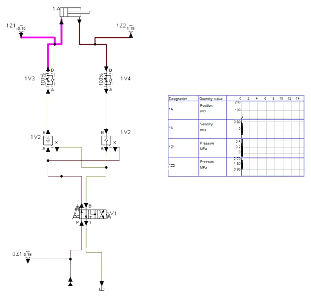
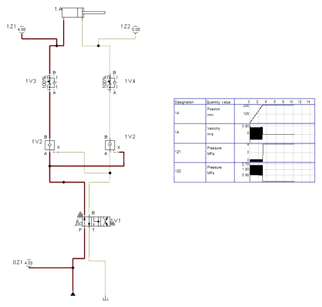
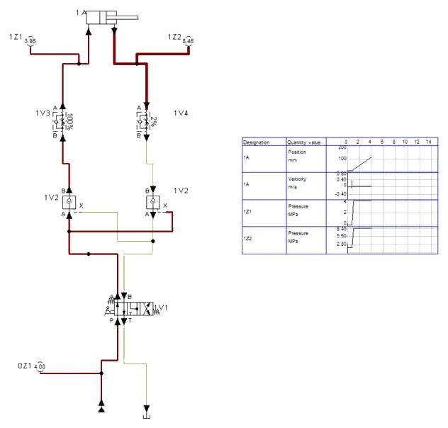
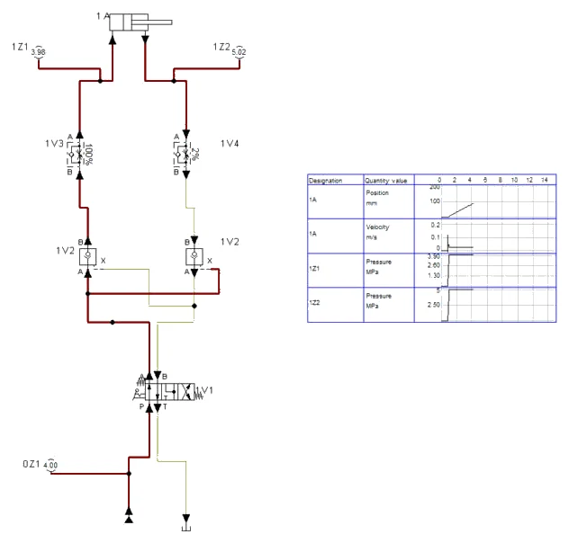
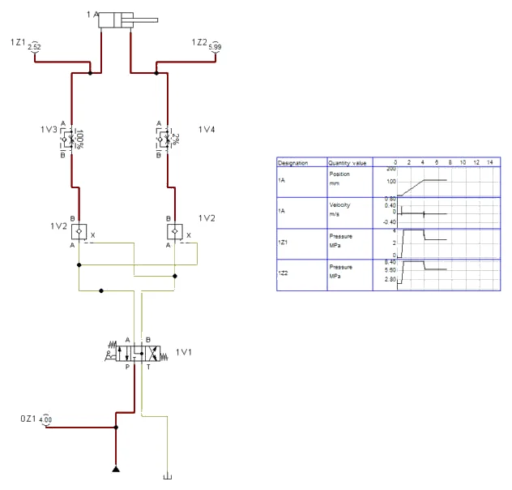
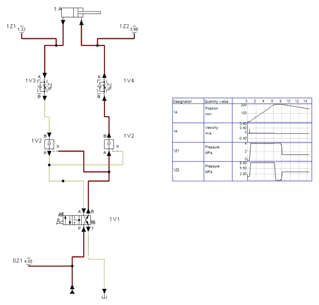
Simulacija i stol
Ulje i crijeva u modelu nisu stlačivi, pa pomak zaustavljenog klipa pod promjenom sile (pitanje 4) simulacija ne pokazuje — njega se mjeri mjernom urom na stolu.
C3 · Pitanja i zadaci
1. Što znači da je klip hidraulički uklješten? Navedite dva stanja u kojima je klip u ovom krugu uklješten i element koji to osigurava u svakom od njih.
Prikaži rješenje
Klip je uklješten kad ulje s obje njegove strane ne može slobodno otjecati, pa na svaku vanjsku silu odgovara porast tlaka s jedne strane, a ne gibanje. U mirovanju to osiguravaju zatvoreni deblokirajući ventili 1V2 (sjedišni, bez propuštanja). U gibanju to osigurava prigušivanje izlaznog toka (1V4 pri izvlačenju, 1V3 pri uvlačenju): ulje ispred klipa može izlaziti samo zadanom brzinom, bez obzira na smjer vanjske sile.
U FluidSIM-u
Oba stanja vide se u simulaciji: u gibanju (Slika H2.3) i u mirovanju (Slika H2.5).
2. Što se dogodilo pri izvlačenju s vučnim teretom bez prigušenja? Zašto 1Z1 tada pokazuje gotovo 0 bar?
Prikaži rješenje
Teret je povukao klipnjaču brže nego što crpka dovodi ulje, gibanje je bilo trzajno. Klipna strana se tada „prazni“ brže nego što se puni: tlak pada na nulu ili ispod (nastaju mjehurići, kavitacija). Da se klip giba zadanom brzinom uz vučni teret, s tlakom p2 = 2 bar na izlazu trebao bi tlak p1 = (0,2 · 289,8 − 500) / 490,9 = −0,9 N/mm², dakle −9 bar, što nije moguće. Otpor mora stvoriti izlazna strana.
U FluidSIM-u
U simulaciji (Slika H2.1) 1Z1 pada na −0,10 MPa, a gibanje je trzajno.
3. Izračunajte tlak na prstenastoj strani pri izvlačenju s prigušenjem izlaznog toka ako klipna strana ima 40 bar: (a) bez tereta, (b) s vučnim teretom 0,5 kN, (c) s tlačnim teretom 0,5 kN.
Prikaži rješenje
A1 = 490,9 mm², A2 = 289,8 mm², p1 · A1 = 4 · 490,9 = 1963 N. (a) p2 = 1963 / 289,8 = 6,78 N/mm² = 67,8 bar. (b) vučni teret pomaže izvlačenje: p2 = (1963 + 500) / 289,8 = 8,50 N/mm² = 85,0 bar. (c) tlačni teret koči: p2 = (1963 − 500) / 289,8 = 5,05 N/mm² = 50,5 bar. U svim slučajevima p2 je viši od tlaka crpke — to je povišenje tlaka zbog omjera površina.
U FluidSIM-u
Simulacija: (b) 8,46 MPa (Slika H2.3), (c) 5,02 MPa (Slika H2.4).
4. Kolika je hidraulička krutost cilindra zaustavljenog na polovici hoda, ako se računa E = 1,4 · 10⁹ Pa i po 10 cm³ ulja u vodovima između ventila 1V2 i cilindra? Koliki je pomak pod silom od 0,5 kN?
Prikaži rješenje
V1 = 490,9 mm² · 100 mm + 10 000 mm³ = 59,1 cm³; V2 = 289,8 · 100 + 10 000 = 39,0 cm³. c1 = E · A1² / V1 = 1,4 · 10⁹ · (4,909 · 10⁻⁴)² / 59,1 · 10⁻⁶ = 5,71 · 10⁶ N/m; c2 = 1,4 · 10⁹ · (2,898 · 10⁻⁴)² / 39,0 · 10⁻⁶ = 3,02 · 10⁶ N/m. Ukupno c = 8,73 · 10⁶ N/m = 8,7 N/µm. Pomak x = 500 / 8,73 · 10⁶ = 0,057 mm. Izmjereni pomak obično je nekoliko puta veći, jer se šire crijeva, a u ulju ima otopljenog i nevezanog zraka.
5. Koliki protok prolazi kroz 1V4 i koliko ulja odlazi preko sigurnosnog ventila pri izvlačenju brzinom 20 mm/s? Koliko se snage pretvara u toplinu na 0V1?
Prikaži rješenje
Kroz 1V4: Q = 20 mm/s · 289,8 mm² = 5 796 mm³/s = 0,35 l/min. Na klipnu stranu ulazi Q1 = 20 · 490,9 = 9 818 mm³/s = 0,59 l/min. Višak 2,0 − 0,59 = 1,41 l/min odlazi kroz 0V1 pri 40 bar: P = 40 · 10⁵ · 1,41 / 60 000 ≈ 94 W. Prigušivanje uz crpku stalnog protoka uvijek stvara toplinu; kod većih strojeva koristi se crpka promjenjivog protoka ili proporcionalni ventil.
6. Zašto srednji položaj razvodnika mora spajati A i B sa spremnikom? Nacrtajte srednji položaj koji ne bi bio prikladan i objasnite što bi se dogodilo.
Prikaži rješenje
Deblokirajući ventili 1V2 zatvaraju samo ako su oba upravljačka voda bez tlaka. Srednji položaj sa zatvorenim A i B (kvadrat s četiri zatvorena priključka) zarobio bi tlak u vodovima između razvodnika i 1V2; taj tlak mogao bi držati jedan ventil djelomično otvorenim i klip bi pod vanjskom silom klizio. Neprikladan je i srednji položaj P→T s zatvorenim A i B, iz istog razloga.
7. Dopunite shemu: gdje biste postavili 1V2 u stvarnom stroju i zašto? Što se postiže ako se ventil ugradi izravno na cilindar?
Prikaži rješenje
Deblokirajući ventil ugrađuje se što bliže cilindru, najbolje izravno na priključke cilindra (prirubnički ili navojni blok). Tada je između ventila i klipa najmanji volumen ulja i nema crijeva, pa je krutost najveća. Ako pukne crijevo između razvodnika i cilindra, ventil i dalje drži klip — to je i sigurnosna zaštita od pada tereta.
8. Zašto se u ovom krugu ne koristi prigušivanje ulaznog toka (prigušnica u dovodu)? U kojem je slučaju ono ipak dopušteno?
Prikaži rješenje
Prigušivanje ulaznog toka ograničava samo koliko ulja ulazi u cilindar; ne može spriječiti da vučni teret izvuče klip brže, jer izlazna strana tada nema otpora. Uz promjenjivi smjer sile klip zato nije uklješten. Prigušivanje ulaznog toka dopušteno je kad sila uvijek djeluje protiv gibanja (npr. dizanje tereta, prešanje), a prednost mu je što ne stvara povišeni tlak na izlaznoj strani.
Dio D · V37 Proslijedno tlačno upravljanje dvama cilindrima
Zadatak
Na napravi za utiskivanje zatika u glavčinu radnik ulaže glavčinu i pomiče ručicu jednog razvodnika. Najprije cilindar 1A mora stegnuti glavčinu silom od najmanje 1,2 kN, zatim cilindar 2A utiskuje zatik, za što treba oko 1,8 kN. Pri povratu redoslijed je obrnut: najprije se povlači 2A, a tek kad je potpuno uvučen, 1A otpušta glavčinu. Dodatnih razvodnika i graničnih sklopki nema — redoslijed određuju tlakovi u krugu.
Na didaktičkom stolu oba cilindra su dvoradna Ø25/16 mm s hodom 200 mm. Redoslijedni ventil 1V2 u vodu prema klipnoj strani cilindra 2A namješten je na 30 bar, a redoslijedni ventil 1V3 u vodu prema prstenastoj strani cilindra 1A na 25 bar. Uz svaki redoslijedni ventil paralelno je spojen nepovratni ventil za povratni tok. Ručni razvodnik 4/3 centriran oprugama ima srednji položaj P→T s zatvorenim A i B. Agregat daje oko 2,0 l/min, sigurnosni ventil je namješten na 50 bar.
Zadatak: spojite krug, namjestite redoslijedne ventile, provjerite redoslijed u oba smjera, izmjerite tlakove u svakom koraku i provjerite što se događa kad 1A naiđe na zapreku prije nego što stegne obradak.
Sigurnost pri radu
Pažnja
Redoslijedni ventil ne zna gdje se cilindar nalazi — reagira samo na tlak. Ako cilindar zapne, tlak naraste i sljedeći cilindar krene iako prethodni korak nije završen. Zato u pokusu sa zaprekom ruke ne smiju biti u području nijednog cilindra. Vanjski odvod redoslijednog ventila mora biti spojen na spremnik bez prigušenja i zatvaranja; zatvoren odvod mijenja tlak otvaranja i može oštetiti ventil. Prije odspajanja isključite agregat, pomaknite ručicu u oba smjera i provjerite da 0Z1, 1Z1 i 1Z2 pokazuju 0 bar.
Vijke redoslijednih ventila okrećite samo dok su cilindri na kraju hoda i ne gibaju se. Crijeva spajajte bez tlaka i provjeravajte spojke povlačenjem. Propuštanje tražite kartonom; proliveno ulje obrišite odmah; ozljeda uljem pod tlakom traži hitnu liječničku pomoć. Zaštitne naočale cijelo vrijeme.
Shema
Lijevi položaj 1V1 (P→A): ulje ide izravno na klipnu stranu 1A, ulje s njegove prstenaste strane vraća se kroz nepovratni ventil uz 1V3. 1A se izvlači pri malom tlaku. Kad nalegne na obradak, tlak raste do 30 bar, 1V2 otvara i izvlači se 2A. Ulje s prstenaste strane 2A odlazi izravno u vod B. Desni položaj (P→B): ulje ide izravno na prstenastu stranu 2A, a njegova klipna strana prazni se kroz nepovratni ventil uz 1V2. Kad je 2A uvučen, tlak u vodu B raste do 25 bar, 1V3 otvara i uvlači se 1A.
Za vrijeme utiskivanja redoslijedni ventil drži tlak ispred sebe na najmanje 30 bar, pa sila stezanja 1A ne pada ispod p · A1 ni onda kad 2A treba manji tlak.
Vježba se radi u FluidSIM-u
Koraci postupka vježbe koji se odnose na spajanje na didaktičkoj ploči i mjerenje štopericom ili manometrom izvode se u simulaciji. Gdje simulacija ne može pokazati pojavu iz pokusa, to je napisano uz korak.
D1 · Dva redoslijedna ventila s nepovratnim ventilima
- Agregat 5 MPa, 2 l/min; 1V1 kao u V34. Dva cilindra Ø25/16 mm, hod 200 mm. 2A dobiva teret 1000 N (Constant force) koji predstavlja utiskivanje zatika.
- Redoslijedni ventili: Shutoff/counteracting valve iz skupine Pressure Control Valves, zrcaljen okomito (Edit → Mirror → Vertically) da P bude dolje. Nominal Pressure: 1V2 3 MPa (vod A → klipna strana 2A), 1V3 2,5 MPa (vod B → prstenasta strana 1A).
- Upravljački priključak X svakog ventila spojite na njegov ulaz P (unutarnje upravljanje). Uz svaki redoslijedni ventil paralelno Check valve koji propušta prema razvodniku (povratni tok).
- Klipna strana 1A spojena je izravno na vod A, prstenasta strana 2A izravno na vod B. Manometri 1Z1 (klipna strana 1A), 1Z2 (klipna strana 2A, iza 1V2), 0Z1 (P). Dijagram: oba cilindra, 1Z1, 1Z2, 0–20 s.
D2 · Redoslijed 1A+ 2A+ 2A− 1A−
- Start, Shift + klik na lijevo polje 1V1: izvlači se samo 1A, tlak je gotovo nula (Slika K2.1).
- Kad 1A stigne na kraj (stegne glavčinu), tlak naraste i 1V2 otvori pri 3,19 MPa (3 MPa + pad u ventilu): 2A se izvlači uz 1Z2 = 2,05 MPa, a 1Z1 ostaje 3,19 MPa (Slika K2.2). Na kraju oba su na 5,00 MPa (Slika K2.3).
- Desno polje 1V1: ulje ide izravno na prstenastu stranu 2A, a klipna strana 2A prazni se kroz nepovratni ventil uz 1V2 — 2A se vraća (Slika K2.4; teret pomaže pa se pojavi podtlak).
- Kad je 2A uvučen, tlak u vodu B naraste do 2,5 MPa, 1V3 otvori i uvlači se 1A uz 0Z1 = 2,63 MPa (Slika K2.5). Cijeli ciklus 1A+ 2A+ 2A− 1A−: Slika K2.6.
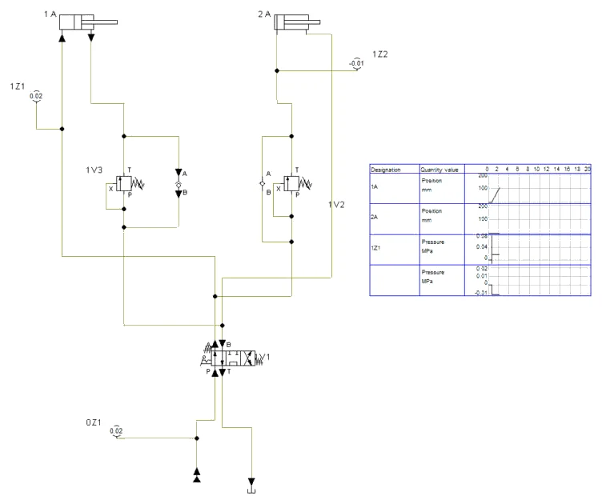
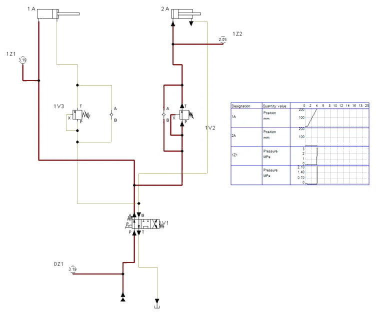
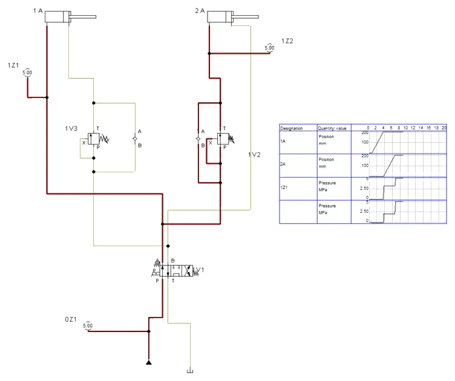
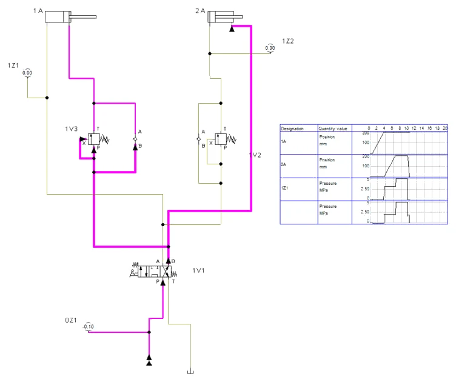
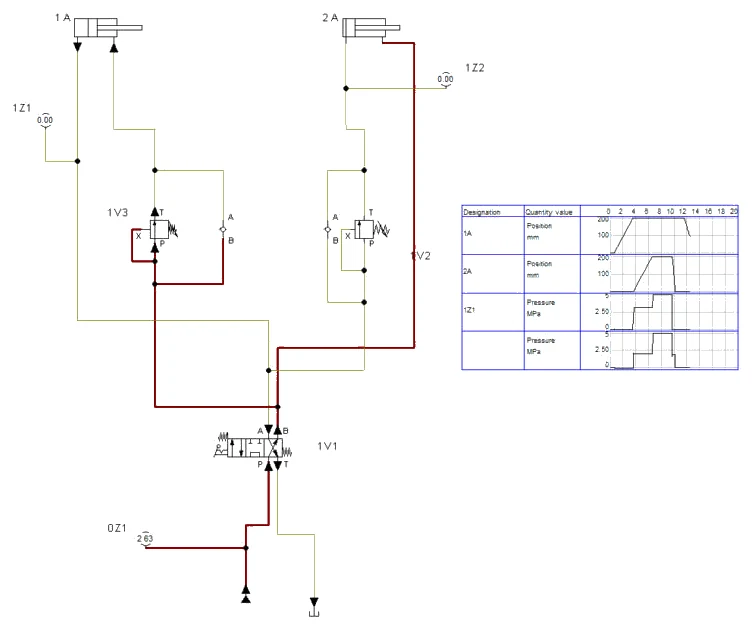
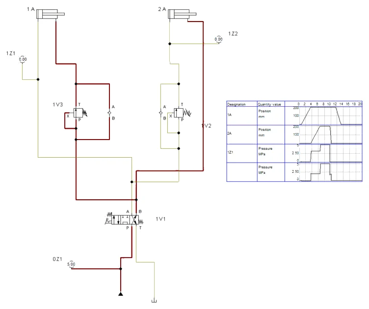
D3 · Pokus sa zaprekom
- Zapreka na pola hoda: Force profile cilindra 1A → Variable force: 0 N do 98 mm, 5000 N od 100 mm do kraja (klik na krivulju dodaje točku).
- Start i izvlačenje: 1A stane na 100 mm, tlak naraste, 1V2 otvori i 2A krene iako glavčina nije stegnuta (Slike K3.1 i K3.2). Redoslijedni ventil reagira samo na tlak.
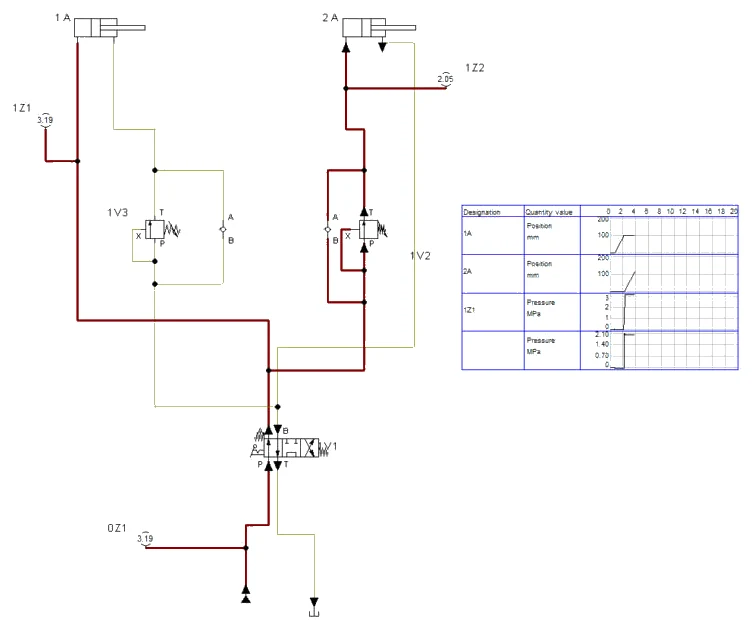
D4 · Pitanja i zadaci
1. Po čemu se redoslijedni ventil razlikuje od sigurnosnog ventila, iako imaju gotovo isti simbol? Zašto redoslijedni ventil ima vanjski odvod ulja?
Prikaži rješenje
Oba otvaraju kad tlak na ulazu nadvlada oprugu. Sigurnosni ventil ispušta ulje u spremnik i ograničava najveći tlak u krugu. Redoslijedni ventil propušta ulje dalje prema drugom potrošaču, pa je njegov izlaz pod tlakom. Prostor opruge zato se ne smije spojiti s izlazom, jer bi tlak na izlazu pomagao opruzi i mijenjao tlak otvaranja; ulje koje procuri u prostor opruge odvodi se posebnim vodom u spremnik.
2. Kolika je sila stezanja 1A u trenutku kad 1V2 otvori, a kolika kad 2A stigne na kraj hoda? Je li zadovoljen zahtjev od 1,2 kN?
Prikaži rješenje
A1 = 490,9 mm². Pri otvaranju 1V2: F = 3 N/mm² · 490,9 mm² = 1473 N. Za vrijeme utiskivanja tlak ispred 1V2 ne pada ispod 30 bar, pa sila ostaje najmanje 1473 N. Kad 2A stigne na kraj, tlak u cijelom vodu A raste do 50 bar i sila stezanja iznosi 2454 N. Zahtjev od 1,2 kN (za koji bi bilo dovoljno 24,4 bar) zadovoljen je s rezervom.
U FluidSIM-u
U simulaciji 1V2 otvori pri 3,19 MPa (Slika K2.2), pa je sila stezanja oko 1,57 kN; na kraju hoda 2A tlak je 5,00 MPa.
3. Koliki tlak treba 2A za utiskivanje zatika silom 1,8 kN? Koliko snage se za vrijeme utiskivanja gubi na 1V2 ako 2A treba samo 20 bar?
Prikaži rješenje
p = 1800 / 490,9 = 3,67 N/mm² = 36,7 bar — iznad 30 bar, pa je tlak ispred i iza 1V2 gotovo jednak i gubitak je mali. Ako 2A treba samo 20 bar, 1V2 drži ispred sebe 30 bar, pa je pad tlaka 10 bar: P = 10 · 10⁵ Pa · 2,0 / 60 000 m³/s = 33 W. To je cijena održavanja sile stezanja.
U FluidSIM-u
U simulaciji 2A s teretom 1000 N treba 2,05 MPa — to je drugi slučaj iz pitanja (oko 20 bar); ispred 1V2 ostaje 3,19 MPa.
4. Navedite pravila za izbor tlaka otvaranja redoslijednog ventila. Provjerite namještenje 1V2 ako 1A za slobodno gibanje treba 6 bar, a sigurnosni ventil je na 50 bar.
Prikaži rješenje
Tlak otvaranja mora biti (a) dovoljno iznad najvišeg tlaka koji se pojavljuje dok prethodni cilindar još putuje (preporuka: barem 10 bar više), inače drugi cilindar krene prerano; (b) dovoljno ispod tlaka sigurnosnog ventila (barem 10 bar), da drugi cilindar dobije potreban tlak i da redoslijedni ventil sigurno otvori; (c) takav da ostvaruje traženu silu prethodnog koraka. Za 1V2: 6 + 10 = 16 bar ≤ 30 bar ≤ 50 − 10 = 40 bar; sila pri 30 bar zadovoljava. Namještenje je ispravno.
5. Koliko traje cijeli ciklus ako oba cilindra rade punim hodom od 200 mm uz 2,0 l/min? Zanemarite vrijeme porasta tlaka.
Prikaži rješenje
Izvlačenje jednog cilindra: 200 / 67,9 = 2,95 s; uvlačenje: 200 / 115,0 = 1,74 s. Ciklus 1A+ 2A+ 2A− 1A−: 2,95 + 2,95 + 1,74 + 1,74 = 9,4 s. Stvarno je nekoliko desetinki dulje po koraku, jer tlak mora narasti do tlaka otvaranja redoslijednog ventila.
6. Što ste opazili u pokusu sa zaprekom? Kakva je opasnost u stvarnoj napravi i kako se ona uklanja?
Prikaži rješenje
1A je stao na zapreci, tlak je narastao do 30 bar i 2A je krenuo, iako glavčina nije stegnuta. Redoslijedni ventil ne razlikuje „stegnuo obradak“ od „zapeo na pola puta“. U napravi bi zatik bio utisnut u nestegnutu ili krivo postavljenu glavčinu, a mogla bi se ozlijediti ruka ostavljena u napravi. Uklanja se kombinacijom tlaka i puta: redoslijed se dopušta tek kad je ispunjen i tlačni uvjet i uvjet položaja (granični ventil ili granična sklopka na položaju stezanja), u elektrohidraulici tlačna sklopka i granična sklopka u seriji (vidi V38 i V40).
U FluidSIM-u
U simulaciji (Slike K3.1 i K3.2) 2A krene čim 1A stane na zapreci.
7. Dopunite shemu: što bi se dogodilo da nema nepovratnog ventila uz 1V2? Nacrtajte ispravan spoj i označite smjer slobodnog toka.
Prikaži rješenje
Redoslijedni ventil ne propušta tok od izlaza prema ulazu. Pri uvlačenju 2A ulje s njegove klipne strane ne bi imalo kamo, pa se 2A ne bi mogao uvući; tlak u vodu B porastao bi do 25 bar, 1V3 bi otvorio i uvukao se 1A dok 2A ostaje izvučen — kriv redoslijed. Nepovratni ventil spaja se paralelno s 1V2, sa slobodnim tokom od cilindra 2A prema vodu A razvodnika.
8. Zašto se nakon dužeg rada redoslijed ponekad poremeti iako nitko nije dirao vijke? Navedite dva uzroka.
Prikaži rješenje
(a) Toplije ulje ima manju viskoznost, pa se mijenjaju padovi tlaka u vodovima i tlak potreban za gibanje; razmak između tlaka gibanja i tlaka otvaranja se smanjuje. (b) Trošenje brtvi cilindara i promjena trenja mijenjaju tlak slobodnog gibanja; (c) povišen tlak u odvodu redoslijednog ventila (npr. zaprljan povratni filtar) pomiče tlak otvaranja. Zato se namještenje provjerava pri radnoj temperaturi ulja i ostavlja se dovoljan razmak tlakova.
Zapis simulacije
Rezultati simulacije u FluidSIM-H 4.2 za sve vježbe na ovoj stranici, uz vrijednosti iz proračuna (rješenje).
| Veličina | Očekivano (proračun / zadatak) | FluidSIM | Komentar |
|---|---|---|---|
| Izvlačenje normalno (V34) | 2,95 s, 67,9 mm/s | oko 2,9 s, 0,068 m/s (Slika F2.1) | |
| Izvlačenje diferencijalno (V34) | 1,21 s, 165,8 mm/s | oko 1,25 s, 0,16 m/s (Slika F2.5) | 1Z1 ≈ 1Z2 |
| Uvlačenje (V34) | 1,74 s, 115 mm/s | oko 1,7 s, 0,115 m/s (Slika F2.3) | |
| Paralelno bez djelitelja (V35) | 1A2 pa 1A1, 10,2 / 30,6 bar, 5,9 s | 1,02 / 3,06 MPa, 5,9 s (Slike G2.1, G2.2) | jedan za drugim |
| S djeliteljem (V35) | 5,9 s, 34 mm/s | 5,9 s, 34 mm/s (Slika G3.1) | 0Z1 = 3,08 MPa (prigušni model) |
| Vučni teret, bez prigušenja (V36) | bježanje, 1Z1 ≈ 0 | trzajno, 1Z1 = −0,10 MPa (Slika H2.1) | |
| p₂ s vučnim / tlačnim teretom (V36) | 85,0 / 50,5 bar | 8,46 / 5,02 MPa (Slike H2.3, H2.4) | 1V4 2 % |
| Otvaranje 1V2 (V37) | 30 bar | 3,19 MPa (Slika K2.2) | nazivno 3 MPa |
| Povrat 1A (V37) | 25 bar | 0Z1 = 2,63 MPa (Slika K2.5) | nazivno 2,5 MPa |
| Zapreka na 1A (V37) | 2A krene | 2A krene (Slika K3.1) | pitanje 6 |
Spremanje i predaja
- File → Save As. U polje Naziv datoteke upišite
PIH_2026-2027_Prezime_Ime_V##.ct(## je broj vježbe, bez kvačica) i kliknite Spremi. Kasnije spremanje: File → Save (Ctrl + S). - Snimka: za vrijeme simulacije (nakon Pause) snimite zaslon sa shemom i dijagramom (u sustavu Windows: Windows + Shift + S), ili shemu spremite naredbom File → TIFF Export.
- Odgovorite na pitanja vježbe; rezultate simulacije usporedite s proračunom.
- Ako nastavnik traži predaju: shema
.ct, snimka simulacije i odgovori. Sve datoteke imenujtePIH_2026-2027_Prezime_Ime_….
Primjena na vlastiti zadatak P##
Projekt SL-3, vaša varijanta P## (ulazni podaci u „Projektni zadaci P01–P21”): ako bi vaš stroj radio hidraulički, odredite bi li diferencijalni spoj skratio brzo primicanje i treba li cilindar uz vučni teret uklještiti kao u V36.
Kod pitanja: susjed → radni list i ova stranica → nastavnik. AI smijete koristiti uz navođenje što je i kako napravljeno.
Za nastavnika
Dio A · vježba V34
Otvori upute za nastavnika
Priprema
Označite na ploči stola položaje 150 mm i 200 mm hoda (ljepljiva traka). Provjerite presjek crijeva: crijevo od 1V2 do voda A mora biti barem istog presjeka kao vod A. Provjerite nepovratni ventil 1V3 na klupi. Za pokus sile na kraju hoda graničnik mora biti čvrst — klipnjača ne smije udarati u neosiguran predmet. Pripremite mjerni list s tablicom za oba spoja i kombinirani hod.
Tijek sata
- Uvod (10 min): površina klipnjače kao „radna“ površina, brzina i sila, primjer preše.
- Crtanje sheme i predračun brzina i sila (15 min).
- Spajanje i provjera (15 min).
- Mjerenja: normalni spoj, diferencijalni spoj, uvlačenje (20 min).
- Kombinirani hod i pokus sile na graničniku (15 min).
- Obrada, pitanja 4–7, ispuštanje tlaka i rastavljanje (15 min).
Očekivani rezultati
Vrijeme normalnog izvlačenja 3,0–3,3 s, diferencijalnog 1,3–1,6 s (nešto sporije od teorijskih 1,21 s zbog pada tlaka u dodatnom vodu), uvlačenja 1,8–2,0 s. U diferencijalnom spoju 1Z1 i 1Z2 pokazuju gotovo isti tlak. Kombinirani hod 1,7–2,0 s. Polaznik zaključuje da je sila u diferencijalnom spoju ograničena na oko 1 kN i predlaže automatsko preklapanje.
Česte pogreške
- nepovratni ventil 1V3 okrenut naopako, pa diferencijalni spoj ne radi;
- brzina diferencijalnog izvlačenja računa se s A2 umjesto s A3;
- zaključak da diferencijalni spoj „povećava snagu“ — snaga je ista, mijenja se odnos sile i brzine;
- pokušaj uvlačenja dok je 1V2 pritisnut — klipnjača stoji jer je B glavnog razvodnika odvojen;
- preskakanje ispuštanja tlaka iz voda između 1V2 i 1V3.
Vrednovanje
| Kriterij | Bodovi |
|---|---|
| Shema i objašnjenje tokova u oba spoja | 15 |
| Spajanje, smjer 1V3, provjera | 15 |
| Mjerenja u normalnom, diferencijalnom i kombiniranom hodu | 20 |
| Računski zadaci (2–6, 8) | 25 |
| Dopuna sheme za automatsko preklapanje (7) | 15 |
| Sigurnost i urednost | 10 |
| Ukupno | 100 |
Dio B · vježba V35
Otvori upute za nastavnika
Priprema
Provjerite da klipnjače nisu kruto povezane — bez djelitelja kruta veza bi se zaglavila i mogla oštetiti opremu. Uz obje klipnjače postavite ravnala s nultom točkom na uvučenom položaju. Provjerite djelitelj na klupi: bez tereta mora dijeliti protok podjednako. Ako na stolu nema djelitelja, drugi dio vježbe može se izvesti s dva tlačno kompenzirana regulatora protoka (po jedan u svakoj grani, namještena na 1,0 l/min), uz odgovarajuću izmjenu pitanja 3.
Tijek sata
- Uvod (10 min): tlak određuje otpor; zašto paralelni cilindri nisu sinkroni.
- Crtanje shema i predračun (15 min).
- Paralelni spoj bez djelitelja: spajanje, pokus, mjerenja (20 min).
- Ugradnja djelitelja, mjerenja razlike položaja i tlakova, zamjena tereta (25 min).
- Pitanja 4–7, rasprava o načinima sinkronizacije (10 min).
- Ispuštanje tlaka, rastavljanje, čišćenje (10 min).
Očekivani rezultati
Bez djelitelja 1A2 se izvlači prvi pri oko 11–13 bar, zatim 1A1 pri oko 31–34 bar; ukupno 6–7 s. S djeliteljem se cilindri gibaju zajedno, razlika položaja na kraju hoda nekoliko milimetara, ulazni tlak 21–25 bar. Polaznik objašnjava povišenje tlaka u djelitelju i zašto serijski spoj s jednakim cilindrima ne radi.
Česte pogreške
- povratni vodovi B spojeni kroz djelitelj umjesto izravno na B razvodnika;
- očekivanje da je ulazni tlak djelitelja jednak višem od dvaju tlakova grana;
- računanje serijskog spoja kao da prvi cilindar nosi samo svoj teret;
- zanemarivanje propuštanja djelitelja pri objašnjenju odstupanja;
- očitavanje ravnala nakon što su oba cilindra već na kraju hoda, pa razlika „nestane“.
Vrednovanje
| Kriterij | Bodovi |
|---|---|
| Sheme paralelnog spoja s djeliteljem i serijskog spoja | 15 |
| Spajanje i provjera, pokus bez djelitelja | 15 |
| Mjerenja: tlakovi grana, razlika položaja, zamjena tereta | 20 |
| Računski zadaci (2–5) | 25 |
| Dopuna sheme i usporedba načina sinkronizacije (6, 7) | 15 |
| Sigurnost i urednost | 10 |
| Ukupno | 100 |
Dio C · vježba V36
Otvori upute za nastavnika
Priprema
Najvažnija provjera je dopušteni tlak elemenata na strani B. Ako neki element ne podnosi 100 bar, spustite 0V1 na 30 bar (tada je p2 s vučnim teretom oko 68 bar) i prilagodite računske zadatke. Pripremite uređaj za opterećenje koji se može prevjesiti iz tlačnog u vučni bez rastavljanja kruga. Pripremite mjernu uru sa stalkom. Za manometar 1Z2 koristite manometar do 160 bar.
Tijek sata
- Uvod (10 min): primjer glodanja, pojam uklještenog klipa, povišenje tlaka pri prigušivanju izlaznog toka.
- Crtanje sheme i predračun tlakova (15 min).
- Spajanje, namještanje 0V1 na 40 bar, provjera (15 min).
- Pokus bez prigušenja i s prigušenjem izlaznog toka, mjerenja tlakova i vremena (25 min).
- Mjerenje krutosti mjernom urom (15 min).
- Ispuštanje tlaka, vraćanje 0V1, rastavljanje (10 min).
Očekivani rezultati
Bez prigušenja s vučnim teretom 1Z1 pada gotovo na nulu, gibanje je nemirno. S prigušenjem gibanje je jednoliko, a vrijeme izvlačenja razlikuje se s vučnim i tlačnim teretom za manje od 10 %. 1Z2 pokazuje 55–85 bar ovisno o teretu. Izmjereni pomak zaustavljenog klipa od 0,1 do 0,5 mm, veći od računskih 0,06 mm, što polaznik objašnjava elastičnošću crijeva i zrakom u ulju.
Česte pogreške
- prigušno-nepovratni ventili okrenuti tako da prigušuju ulaz;
- upravljački vodovi 1V2 spojeni na vlastiti vod umjesto ukriženo;
- zaboravljeno namještanje 0V1 na 40 bar, pa p2 prelazi dopušteni tlak;
- računanje p2 kao jednakog p1, bez omjera površina;
- postavljanje mjerne ure dok je agregat uključen.
Vrednovanje
| Kriterij | Bodovi |
|---|---|
| Shema s ukriženim upravljanjem i pravilno okrenutim prigušno-nepovratnim ventilima | 15 |
| Spajanje, namještanje 0V1, provjera dopuštenog tlaka | 15 |
| Pokusi i mjerenja tlakova, vremena i pomaka | 20 |
| Računski zadaci (2–5) | 25 |
| Obrazloženja i dopuna sheme (6–8) | 15 |
| Sigurnost i urednost | 10 |
| Ukupno | 100 |
Dio D · vježba V37
Otvori upute za nastavnika
Priprema
Provjerite da oba redoslijedna ventila imaju vanjski odvod i da su crijeva za odvod pripremljena. Ventile prije sata otpustite do najmanje vrijednosti, da polaznici sami namještaju. Pripremite umetak za pokus kvara (meki materijal, ne metal) i odredite mjesto gdje se postavlja tako da ga cilindar sigurno pritisne. Pripremite mjerni list s dijagramom put–korak i tablicom tlakova po koracima.
Tijek sata
- Uvod (10 min): tlačno upravljanje redoslijedom, simbol i rad redoslijednog ventila, sigurnosno ograničenje.
- Shema i dijagram put–korak (15 min).
- Spajanje, mjerenje tlakova slobodnog gibanja (15 min).
- Namještanje 1V2 i 1V3, provjera redoslijeda i mjerenja (25 min).
- Pokus sa zaprekom i rasprava (10 min).
- Ispuštanje tlaka, rastavljanje, pitanja 7 i 8 (15 min).
Očekivani rezultati
Tlakovi slobodnog gibanja 3–8 bar. Redoslijed 1A+ 2A+ 2A− 1A− radi pouzdano uz namještenje 30 i 25 bar. Za vrijeme 2A+ 1Z1 pokazuje 30–33 bar, a na kraju hoda 50 bar. Ciklus traje 10–11 s. U pokusu sa zaprekom 2A krene prerano, a polaznik predlaže kombinaciju tlačnog i položajnog uvjeta.
Česte pogreške
- nepovratni ventil uz redoslijedni ventil okrenut naopako — 2A krene odmah ili se ne može uvući;
- redoslijedni ventil ugrađen u vod B umjesto u vod A cilindra 2A;
- odvod redoslijednog ventila zatvoren čepom;
- tlak otvaranja namješten preblizu tlaku sigurnosnog ventila, pa 2A ne dobiva dovoljan tlak;
- namještanje ventila dok se cilindri gibaju.
Vrednovanje
| Kriterij | Bodovi |
|---|---|
| Shema i dijagram put–korak | 15 |
| Spajanje, odvodi, provjera | 15 |
| Namještanje redoslijednih ventila i provjera redoslijeda | 20 |
| Računski zadaci (2–5) | 20 |
| Pokus kvara, obrazloženje i dopuna sheme (6–8) | 20 |
| Sigurnost i urednost | 10 |
| Ukupno | 100 |
Napomena za FluidSIM
Gotove sheme su gore na stranici. Svugdje je otpor razvodnika 0,0002 MPa/(l/min)². V34: nepovratni ventil u FluidSIM-H propušta od A prema B. V35: djelitelj u FluidSIM-H je prigušni model, pa ulazni tlak jednak je višem tlaku grane i za povrat su dodani nepovratni ventili 1V3 i 1V4. V36: jednosmjerni prigušni ventili zakrenuti su 270°, jer u modelu slobodno propuštaju od B prema A; vučni teret je sila −500 N. V37: redoslijedni ventil je Shutoff/counteracting valve s unutarnjim upravljanjem (X na P), teret 2A je 1000 N (≈ 20 bar, drugi slučaj iz pitanja 3); zapreka je promjenjiva sila 5000 N od 100 mm.